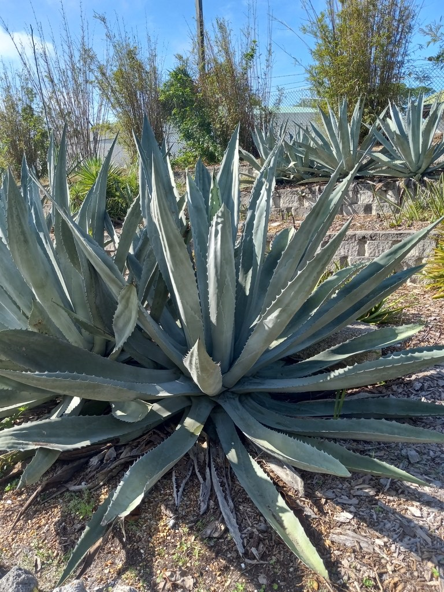

- In our cactus garden you can see this plant's entire life story at once: young rosettes still building energy, a living giant with its towering bloom stalk, and a fully browned skeleton that has finished the job and died.
- The name is a tall tale — it doesn't live a century, just 10 to 30 years — but it spends that whole life saving up for a single, spectacular bloom.
- When it finally flowers, the stalk emerges like a gargantuan asparagus spear and rockets up as fast as a foot a day, reaching 20 feet or more — then the whole plant dies, having bloomed exactly once.
- It doesn't truly vanish: pups sprout around the base to carry the colony on, so the cycle you see here keeps repeating.
Native to Mexico and the southwestern United States, where it grows in arid, rocky, well-drained ground. One of the most widely cultivated succulents in the world and naturalized across every warm continent.
- The Century Plant's life is one of nature's great dramatic gestures: decades of patient, slow growth in service of a single season of spectacular reproduction, followed by death. This is called a monocarpic life cycle — flowering once, then dying — and the common name comes straight from it. People watching a plant grow for 20 or 30 years without blooming assumed it must take a century.
- Two surprises hide in plain sight. First, despite looking like a desert cousin of aloe, the agave is in the asparagus family — and it shows: when the bloom finally fires, the stalk pushes out of the rosette looking exactly like a gargantuan spear of asparagus before it shoots skyward. Second, this is a night-breather.
- To survive blazing sun without losing water, it keeps the pores on its leaves shut all day and opens them only at night to take in the air it needs — which is how a plant this lush thrives where little else can.
- At Palma Sola the cactus garden does something a single plant never could: it shows all three phases of that life cycle side by side. There are younger rosettes still storing energy, at least one living giant in or near its towering flush of bloom, and a fully dead specimen — browned top to bottom with its spent stalk still standing.
- Walk between them and you are walking through the plant's entire biography in a few steps.
- When the bloom finally comes, the flowering stalk can grow up to a foot per day — fast enough to notice day to day — and tops out at 20 to 25 feet, one of the tallest flower stalks of any plant. In its native range those night-opening, nectar-rich flowers are pollinated chiefly by nectar-feeding bats (the plant is 'chiropterophilous,' or bat-loving), with bees, hawk moths, and birds joining in.
- And the plant behind a famous drinks aisle: Agave americana is one of several agaves used to make mezcal and pulque, but true tequila comes specifically from a different species, the Blue Agave (Agave tequilana).
- The death you see in the dead specimen here isn't quite the end — pups (offsets) sprout around the base of a flowering plant, genetically identical clones that carry the colony forward, sometimes for centuries.
In its native Mexico and the southwestern US, the Century Plant is a keystone resource for nectar-feeding bats — including the migratory lesser long-nosed bat, which times its journeys to agave bloom and can pollinate dozens of plants in a single night. The towering stalk's thousands of nectar-rich, night-opening flowers also feed bees, hawk moths, hummingbirds, and other birds.
In Florida, well outside its bat range, the bloom is still a major nectar event for bees and butterflies. The dense, spiny rosette offers protected shelter for lizards and small creatures, and even the standing dead stalk becomes a perch and a nesting and foraging site for insects and birds.
flowers a single time at the end of its life, then dies. Reproduces by seed and, more reliably, by pups (offsets) that sprout from the base and continue the colony after the parent dies.
After 10 to 30 years, the plant sends up an enormous flowering stalk that emerges looking like a giant asparagus spear, then grows as much as a foot per day, reaching 20 to 25 feet, branching near the top and bearing thousands of yellow flowers.
Six-petaled, yellow, rich in nectar, opening at night; bat-pollinated in the native range, with bees, moths, and birds also visiting.
Thick, succulent, gray-green to blue-green, 3 to 6 feet long, arranged in a massive rosette. Margins lined with hooked teeth and tipped with a single sharp, rigid terminal spine that can pierce deeply.
Clonal offsets around the base — the plant's continuation after the bloom.
Here, compare the three life stages directly. A young plant is a tight rosette of spine-edged blue-green blades with no stalk. A plant just starting to bloom pushes up what looks like a colossal asparagus spear; a fully flowering one carries the giant branched stalk overhead — look (carefully) for bees working it.
The dead plant is browned top to bottom with the bare stalk still standing — and look at its base for the next generation of pups already coming up.
Respect the leaf tips: the terminal spine is genuinely dangerous.
The rigid terminal spine causes serious puncture wounds and the leaf margins are toothed — wear long sleeves and gloves when working near it.
The raw sap holds calcium oxalates and saponins that irritate skin, and can cause phototoxic dermatitis: skin contact followed by sunlight may bring on rash and blistering.
With roasting or fermentation it becomes food and drink — the roasted heart, sap, pulque, and mezcal — but raw tissue is irritating and not a casual nibble.
For dogs, the sap can cause drooling, vomiting, and mouth irritation if chewed, and the spines are a physical hazard.
PARK CONTEXT: The cactus garden intentionally displays all three life-cycle phases at once — young pre-bloom rosettes, a living plant with the large flowering stalk, and a fully dead browned specimen with the spent stalk standing. Strong interpretive teaching opportunity for monocarpic life cycles. Note the pups at the base of the dead plant as the cycle's continuation.


- © teschaim (CC-BY-NC), via iNaturalist
- © Austin Sibrian (CC-BY-NC), via iNaturalist
- © Sophia Bailey (CC-BY-NC), via iNaturalist
- © Randall Carter (CC-BY-NC), via iNaturalist